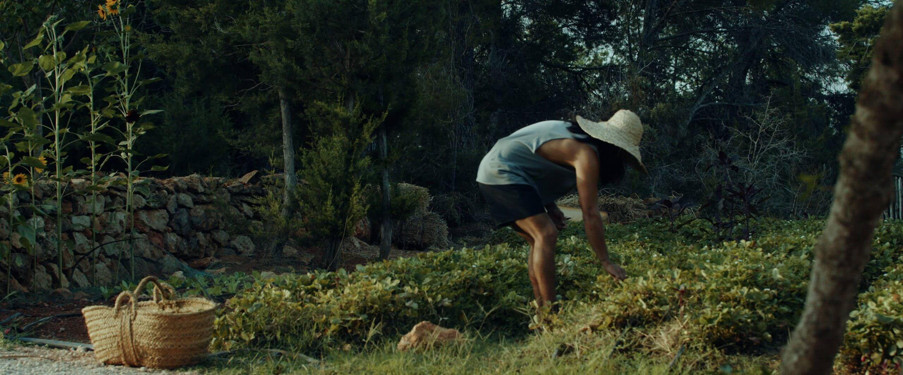
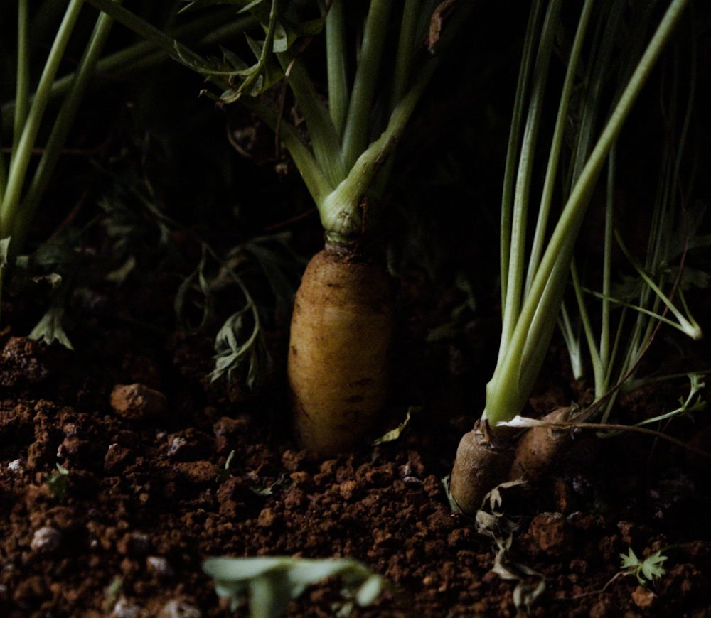
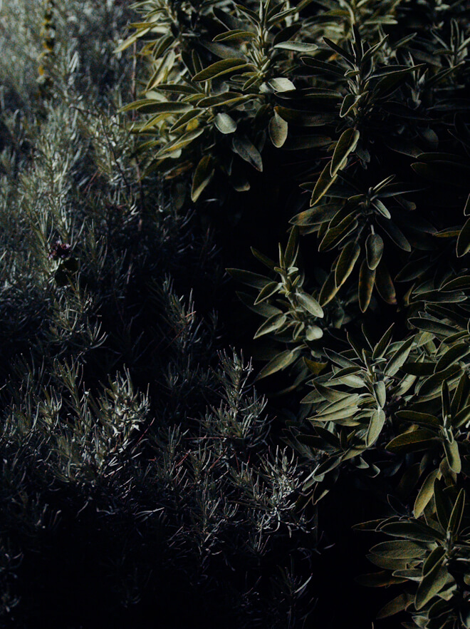
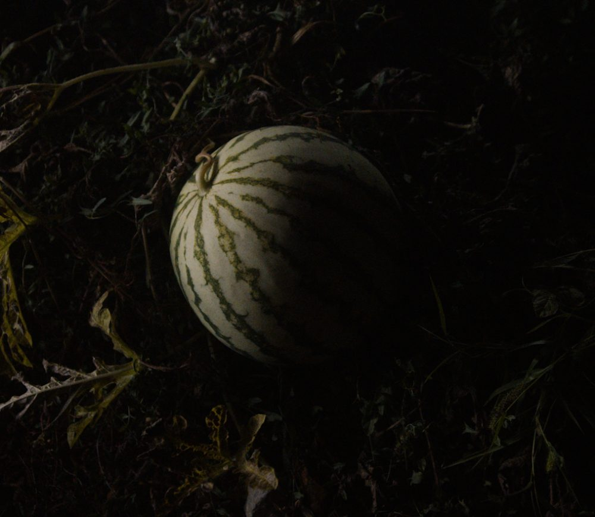
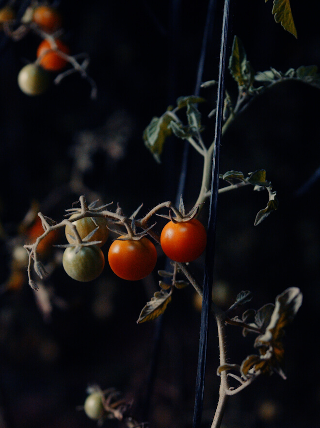
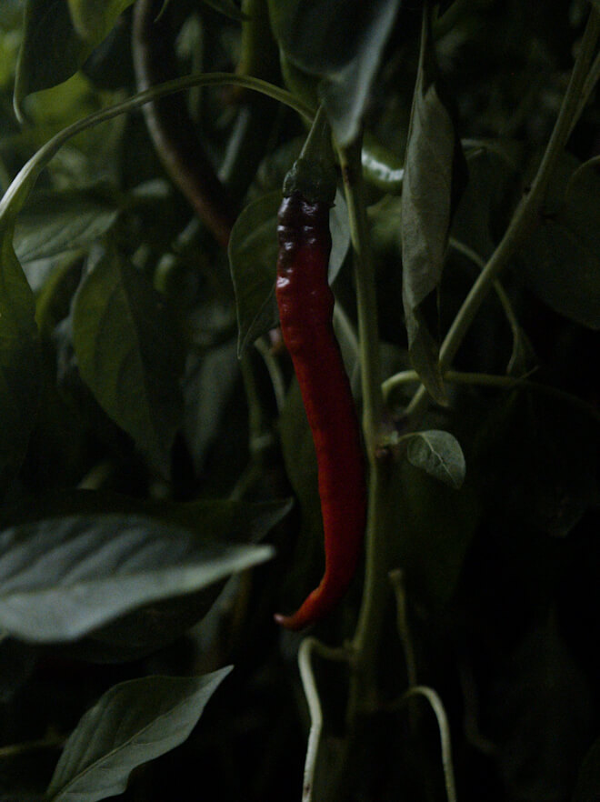

Days at La Granja start early, when the gardens hang in mist and the
cool dawn air fills with birdsong
and the chirping of insects. Soon the farmers arrive. They feed the chickens and a fat brown
Iberian hog
named Coco. As the sun rises over the pinewoods and aromatic fruit trees of Ibiza’s wild
north, the
farmers begin to harvest the crops that will wind up in La Granja’s kitchen, where morning
preparations
are already underway.
Since opening five years ago, La Granja, a 10-hectare
biodynamic farmstead anchored by an
18th-century stone
house, has become a polestar for a new and growing
movement on the Balearic
island. Nodding to Ibiza’s
authentic hippie heritage and locally rooted vision of a
greener,
slower
future, today’s La Granja is a laid-back
agroturismo project that
also functions as a
platform
for
discourse on farming, sustainab
ility and our relationship with
the food we eat.
But the best way to understand La Granja is to begin, quite
literally, at the roots. We
followed a
selection of crops as
they made their way from soil to sustenance in a highly
sustainable,
zero-waste process presented by the farmers,
cooks, critters and creative minds who make the
farm
what it
is today.

1. CARROT
“As a farmer, there’s your tried and true varieties, where you know the flavor is good. But then I like
to switch it up and experiment with different varieties that maybe are new on the scene or I've heard a
friend use,” said Andy, who, as the head farmer, plans the crops for the
coming seasons, pouring
excitedly over the seed catalogs that arrive in November.

“We have yellow, purple, orange carrots, which is really nice—so colorful,“ said farmer Oscar de
la
Fuente of La Granja’s varied crop of the root vegetable, which is grown together with beets,
according
to the wisdom of companion planting.
Chef Eduardo Fiaschi is a fermentation specialist.
Though carrots are famous for their crunchy sweetness and packed punch of vitamins and minerals
(especially beta-carotene, a compound that supports vision and eye health), the non-orange varieties are
less known. Along with having lower sugar content, purple and yellow
carrots, which actually predate
their orange cousins, offer different nutrients, like lutein, which helps prevent macular
degeneration.
2. HERBS
Ibiza is known for its proliferation of wild herbs, many of which now grow in La Granja’s
herb garden.
One of the best-loved and most frequently visited parts of the farm, it provides a constant supply of
herbs for the kitchen and beyond. A few years ago, chef José Catrimán began using the herbs to make his
own interpretation of Hierbas, a traditional Balearic aniseed liqueur made by extracting aromas of
various plants that has its roots in monastic traditions dating back to the Middle Ages.

The process begins with the harvesting of a variety of Ibizan herbs, including chamomile, lemon verbena,
orange and lemon leaves, a native wild thyme called fregola, oregano, sage, a wild mint called
hierbabuena and even lemongrass.
“This is my touch,” says José. “I put lemongrass in there and fennel flower, which gives a lot of flavor
as well,” says the Patagonian chef, who also breaks from tradition when it comes to the alcohol he uses.
“Usually hierbas is so sweet, because they use this aniseed liquor,” he explains. “But I like something
more bitter.”
So he started to experiment with different gins and other alcohol, adding macerated herbs and letting it
sit for months. “I really found my recipe when I started to mix it with mezcal,” says José,
who also mixes some sweet and dry aniseed liquor into his recipe.
3. WATERMELON
“Watermelons are a very typical Ibiza crop. They grow really well in this climate” said Andy. “I see a
lot of the farmers on the Island getting two or three successions of watermelon plantings.
And people
love watermelon here, melons in general.”

In addition to the typical red variety, Andy trialed some yellow and orange
varieties of the hydrating
summer fruit. “One thing about watermelons is when you harvest them, you have to harvest the whole
field,” said Andy.br>
Otherwise, he continued, “you have birds that come or rodents—some kind of pest will get them. So
it's
really interesting when we tell the kitchen, okay, our watermelons are ready, and then they have to
figure out what to do with them. They have to get creative.”
4. TOMATOES
“You think you know what is going to happen, but it's a surprise every time,” said farmer Sara, who
heads the cultivation of La Granja’s tomato patch. “From very little plants, you prepare the field. You
prepare the soil, then prepare the little houses for the tomatoes, hang all of them. It's a constant,
constant work. And you can see the difference week by week."

“Everyone loves tomatoes. Everyone grows tomatoes,” says Andy, “but what I've chosen to do is grow some
harder different varieties of heirloom tomatoes. The flavors of this one particular cherry tomato called
Sungold, they're amazing. They out-flavor every tomato, so we grow the most of those.”
One of the most popular varieties of cherry tomatoes, Sungold tomatoes
ripen early to a golden orange,
ready to harvest throughout the summer. Sweeter and longer-lasting than other cherry tomato varieties,
they can be harvested twice a week once they begin producing fruit.
"From a little stem alone, then you'll have five, ten, and there are too many," said Sara. "So you have
to choose. It’s kind of a game. You try to predict the future. Between those 10, we leave five. You bet
that this is going to happen and maybe it's not. It’s a little bit different every
week.”
5. CHILI

There’s something of a local legend about the chili peppers at La Granja, linked to one of the farmers,
Oscar de la Fuente, who moved to Ibiza four years ago from Guadalajara, Mexico, where he was born and
raised.
“We plant three types of chili, one that here they call the guindilla, then the serrano chili that
is the spiciest, and then the jalapeño. Normally the jalapeño is not very
spicy, but all of them,
they are so spicy,” said Oscar. "So our theory is that how I planted them, they recognize
me
and I
recognize them, and all of them, they are fucking spicy!“
Although the spiciness of the chiles means that they are generally consumed in small amounts, chilis
(especially the mature red varieties) are rich in bioactive plant compounds with antioxidant
properties, like capsanthin, a potentially cancer-fighting compound responsible for the chili’s red
color, and spicy-hot capsaicin, which is believed to increase metabolism, burn fat and relieve
topical pain.